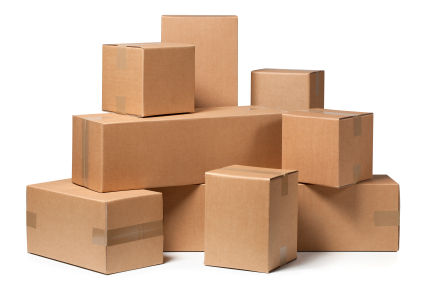
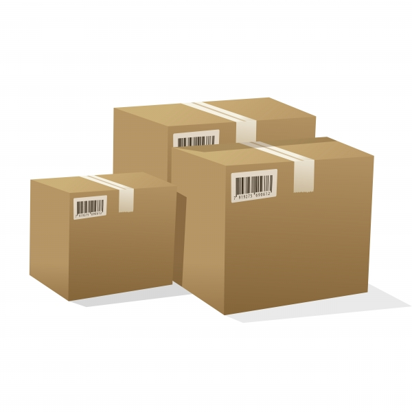

Kostnad
nierohsound.tk har olika fraktkostnader beroende på vilken fraktklass varan tillhör. Det finns i dagsläget sex olika fraktklasser, och vilken fraktkostnad respektive fraktklass avser framgår i nedan tabell:
- Fraktklass A 29 kr
- Fraktklass B 49 kr
- Fraktklass C 79 kr
- Fraktklass D 99 kr
- Fraktklass E 199 kr
- Fraktklass F 39 kr
Utöver dessa fraktklasser finns också varor som säljs med fri frakt. Vilken frakt som gäller för en viss vara framgår från varusidan och i kassan. Handlar du produkter ur flera fraktklasser betalar du bara den högsta fraktavgiften. Naturligtvis betalar du bara en fraktavgift oavsett vilket antal produkter som du beställer eller om ordern delas upp i flera olika försändelser. Kostnaden för frakt räknas ut automatiskt i din order. För nierohsound+ medlemmar levereras alla beställningar över 100kr med fri frakt.
Leverans
Dina varor skickas direkt hem i postlådan. Större beställningar kan du få hämta hos närmaste speditörtombud eller få utkörda som hempaket eller pall. Om varan skadas eller kommer bort under transporten är säljaren ansvarig. Du som kund skall meddela nierohsound.tk så snart som möjligt om du hittat en skada, vi rekommenderar därför att du tar bort ytteremballage och inspekterar dina varor i anslutning till att du mottar dem. Meddelande om skada eller bortkommen leverans måste vara nierohsound.tk tillhanda utan dröjsmål, eller inom skälig tid om du varit förhindrad att påtala felet vid leverans.
Brev och paket
De flesta mindre varor kan skickas med brev och kommer då levereras till din postlåda. Brev som speditören inte kan leverera till postlåda och paket kommer istället aviseras till dig och du kan hämta upp dessa hos i avin anvisat ombud. Observera att säljaren inte kan påverka speditörens bedömning om ett brev går att leverera till postlåda eller om du får hämta ut det.
